Home Soda Machine
Home Soda MachineQuick Start
Six things to do, in this order. Every one is a push or a nut run up by hand — nothing is cut, and nothing is threaded on the path drawn here. Prop this sheet against the cabinet door. The bound guide in the kit carries everything around it.
Lower the faucet
Feed the three tubes and the cable down through the hole and lower the faucet after them. Then push it back, away from you, until it stops. That is the seat — nothing is measured and nothing is aimed at.
The tubes are long on purpose. Leave them long.
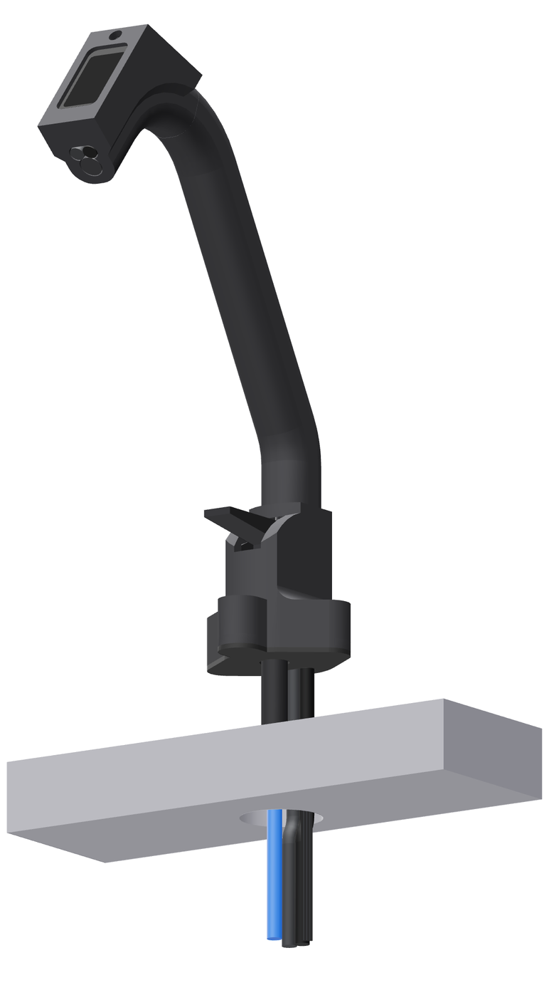
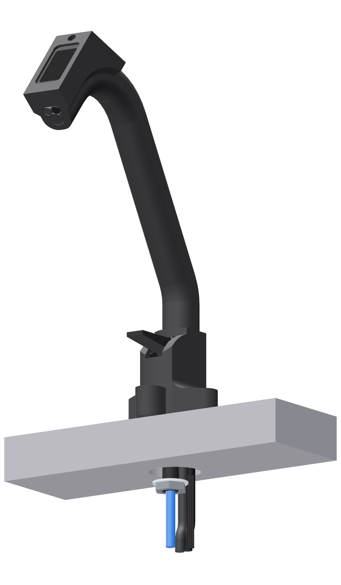
Plate, then nut
Under the counter, hold the steel plate flat above the washer and nut already on the shank. Slide it in sideways — wide slot to the shank, narrow slot to the two black tubes — until it stops. Then run the nut up by hand.
Hand-tight is tight. No wrench.
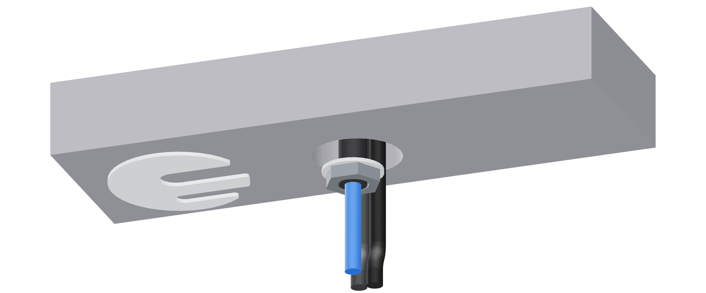
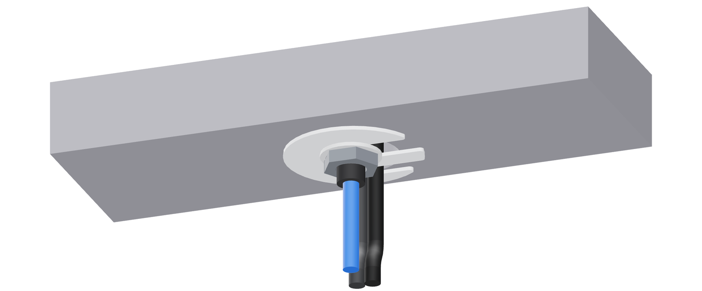
Close the cold water
Follow the 1/4-in line back to its shut-off and turn the handle a quarter turn. Run the kitchen's cold tap: if it goes dry, you closed the right one. Leave the tap open a moment to let the pressure off.
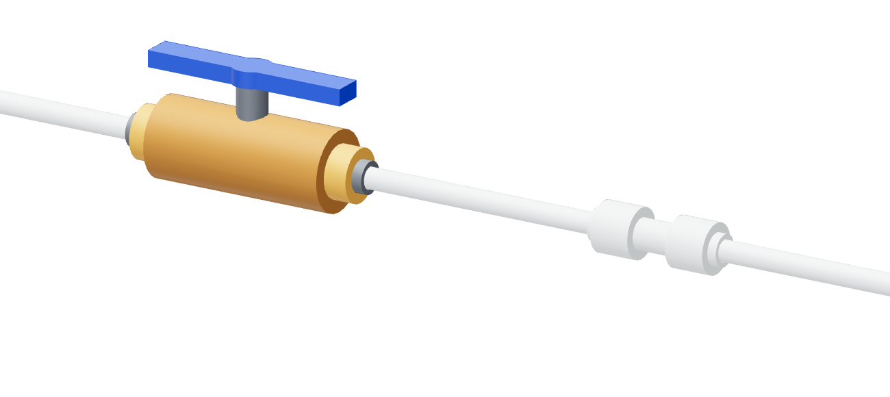
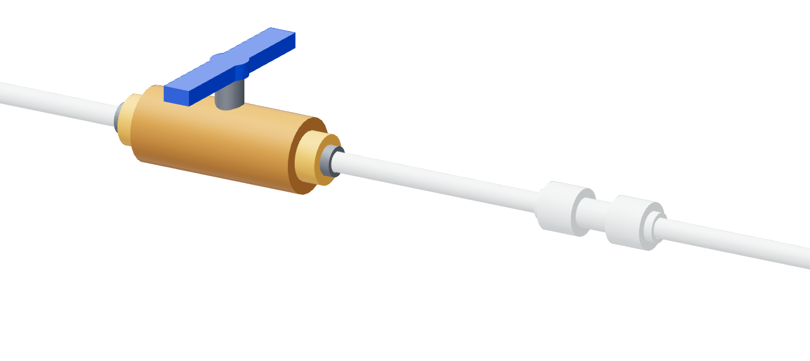
Release the line
Press the fitting's collar in with the collet press from the kit — or a thumbnail — and pull the tube out. Keep a cup under it. A closed valve is not an empty line.
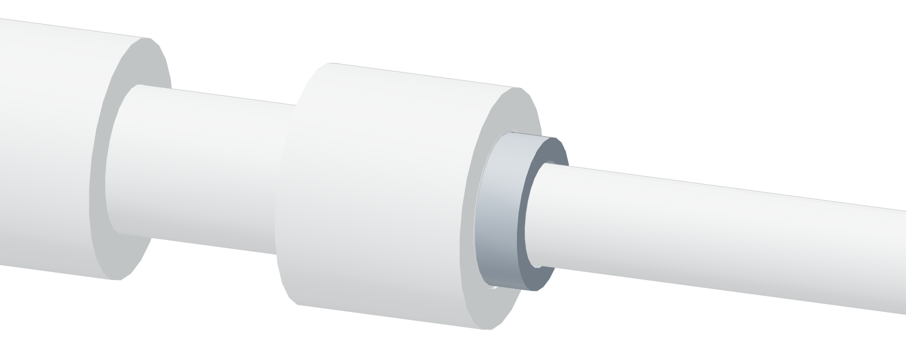
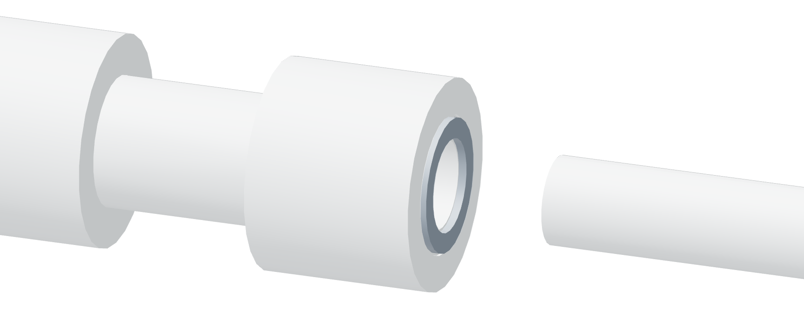
Tee in
Push the tee's short stub into the fitting you just emptied. Then push the line you pulled out into the tee's open end. All the way home each time: a little over half an inch, further than it feels like it should go.
The long white run, filter and all, is already in the tee's third port.
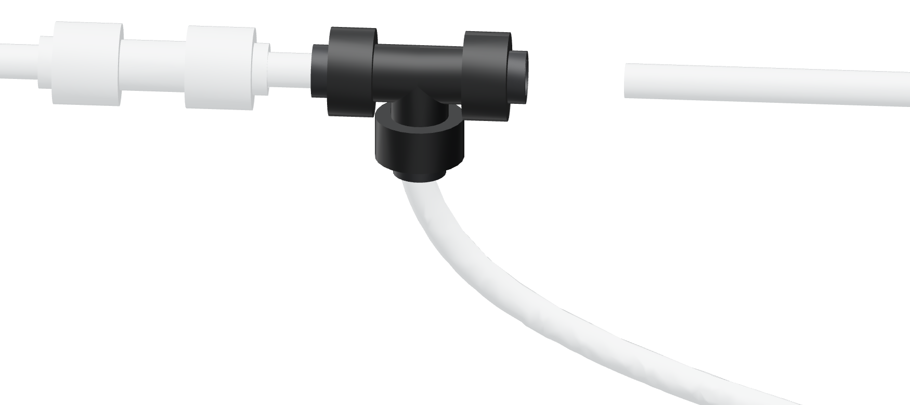
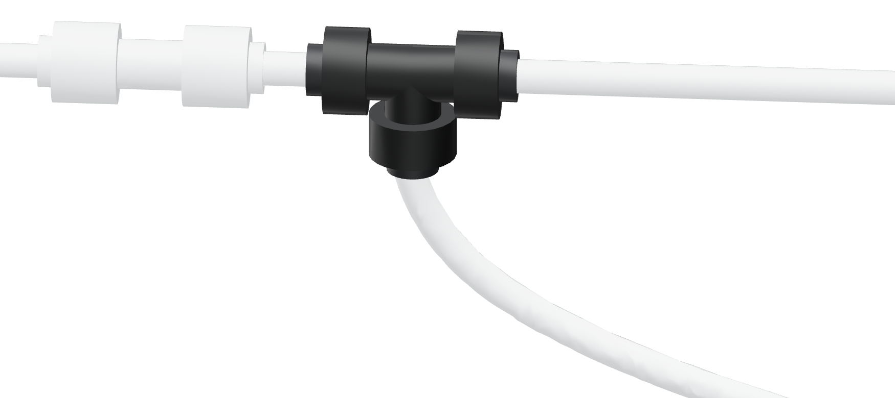
Six pushes at the back
Pull the two shipping caps out first; they do not go back. Each collar carries the word of its port. Push every tube home, and the plug in until it clicks.
| Tap | the white run, from the filter |
| CO2 | the red tether, from the cylinder |
| Soda | the blue tube, from the faucet |
| Flavor | both black tubes, either port |
| Plug | the faucet's cable, into the jack |
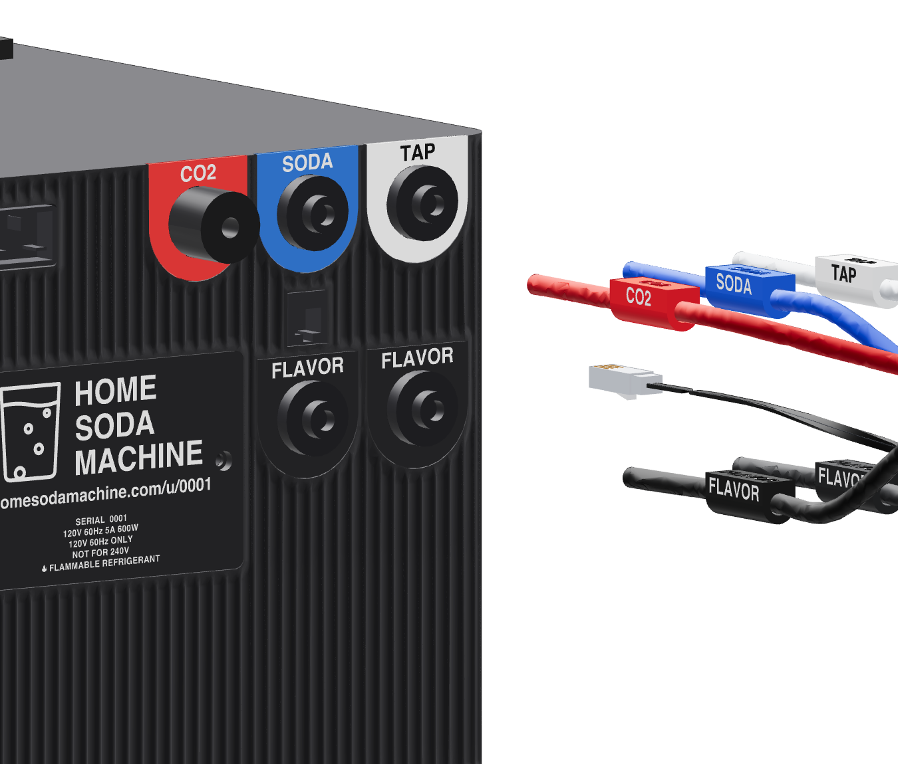